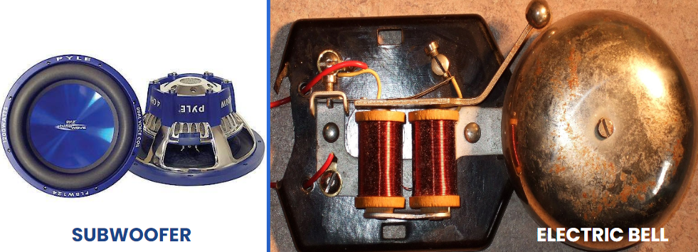

Solenoids
Callout
Ampere's Experiment
Observe the movement of the two wires.
Recall that if two field lines point in the same direction, they will repel. On the other hand, if pointed in opposite directions it will attract.
Magnetic Field Around a Single Loop of Current-carrying Wire
Note that: the center of the loop, the magnetic field points straight through; and
The positive and negative signs denote the direction of the conventional current from positive to negative.

Callout
Solenoid
A coiled conductor with several loops.
It operates like a bar magnet, but it can be switched on and off.


The circular magnetic fields around each dot and X combine to form an overall magnetic field that is a close approximation to the magnetic field of a bar magnet.
Electromagnetic
It is a device that has a magnetic field produced by an electric current.
The strength of the electromagnet can be increased by increasing the number of loops in the coil, increasing the current, or introducing a core made from a material that is quickly magnetized.
Right-Hand Rule

The right-hand rule for a solenoid state that if the fingers of your right-hand wrap around a coil in the direction of the conventional current, your thumb will point in the direction of the north magnetic pole of the coil.
“Fingers follow current, thumb points north.”
Callout
Applications of Solenoid
Solenoids are used in many devices, such as audio speakers, electric bells, and cars.
